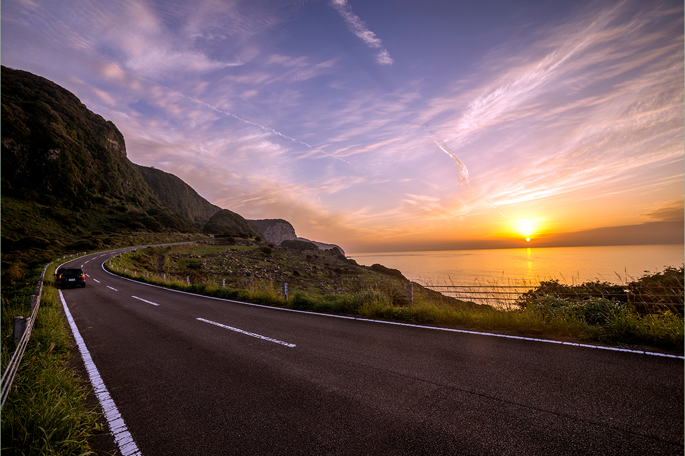

Префектура Нагасаки · Хирадо, остров Икицуки · дорога
«Икицуки Сансэтто-уэй»: десять километров вдоль моря навстречу закату

На западной окраине префектуры Нагасаки есть дорога, по которой едут ради одного зрелища: солнца, уходящего за горизонт Восточно-Китайского моря. Она называется «Икицуки Сансэтто-уэй», то есть «Дорога заката Икицуки».
Маршрут
С острова на остров
Путь начинается на острове Хирадо у северо-западного края Кюсю. Оттуда по мосту Икицуки дорога перебирается на соседний остров Икицуки и дальше тянется вдоль его западного берега. Вся трасса занимает около 10 километров, проезд бесплатный, и открыта она круглый год и круглые сутки.
Лучше всего ехать сюда летом. Под чистым небом с одной стороны сверкают волны Восточно-Китайского моря, с другой поднимаются густо-зелёные горы. Если сойдутся погода и время, на закате море и небо становятся багровыми, и от этого вида трудно оторваться. Гарантий нет: такой закат случается не каждый вечер. Но и без него ехать по берегу, подставляя лицо морскому ветру, очень приятно. Неудивительно, что эту дорогу хорошо знают как место съёмок рекламы.
Рядом
Что попробовать и посмотреть
В поездку рекомендуем захватить местное блюдо: рамэн «аго», бульон для которого варят из летучей рыбы.
Поблизости от маршрута стоит заглянуть в музей «Сима-но Яката», доехать до маяка Обаэ на северной оконечности острова и посмотреть на большую статую бодхисаттвы Каннон «Икицуки Дайгёран Каннон».
«Икицуки Сансэтто-уэй»
- Адрес
- префектура Нагасаки, Хирадо, остров Икицуки, западное побережье
- Телефон
- +81 950-23-8600 (Ассоциация туризма Хирадо)
- Часы работы
- круглосуточно, круглый год
- Цены / Вход
- бесплатно
- Как добраться
- около 60 минут на машине от развязки Саза скоростной дороги Ниси-Кюсю
- Сайт
- hirado-net.com